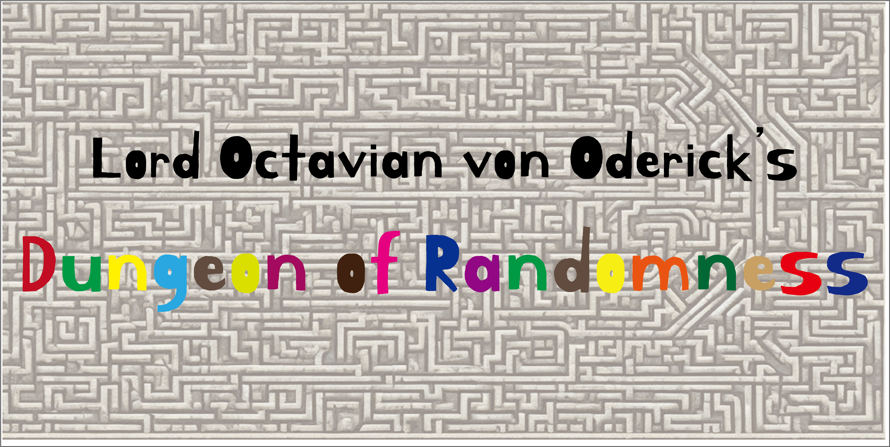
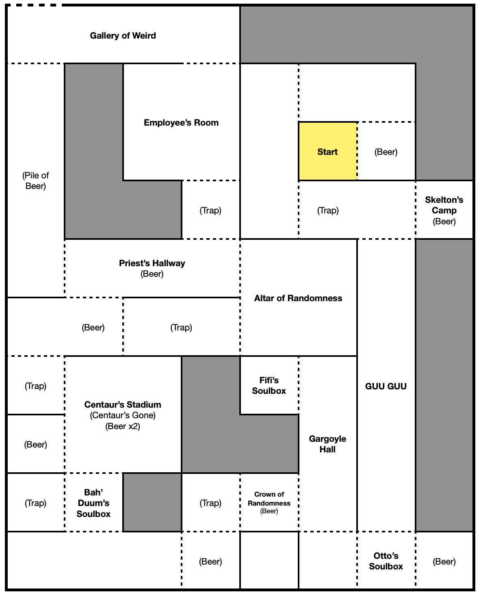

Lord Octavian von Oderick’s Dungeon of Randomness
Rugatha Legends

Rugatha Legends
3152.6.23

「Lott，這是你的卡，無盡的雙人舞。那暖的手，熟悉的旋律……如果我說，你可以永遠留在這裡，你會怎麼做？」
冒險者們一一醒來，發現自己被困在一個狹小的房間內。五名互不相識的人們想不起自己怎麼會出現在這裡，只直覺知道，必須逃離這個鬼地方。
門被推開，一名身材高壯的女性半獸人矗立在大家面前。他自稱 Lilith，或者依他老闆給他的稱呼「小莉莉」。在小莉莉的說明下，冒險者們在自己身上分別找到了兩張小紙，他們被交付要在逃離這座地城前完成小紙上的任務，如果不做到，就會「暴斃」，而小莉莉則是充當他們的嚮導。
踏出小房間的門外，冒險者們發現地上有放了一個小木箱，打開後，竟然是一罐啤酒。此時，小莉莉有些尷尬、扭捏地喊出了「歐德里克啤酒，歐歐歐歐歐……五告讚！」雖然搞不清楚是怎麼回事，冒險者們拿了啤酒，便繼續往後走了。
歐德里克啤酒，歐歐歐歐歐……五告讚！
小莉莉
過了幾個房間，冒險者在觸摸牆壁的過程中，發現了異狀，這個房間內似乎有個陷阱。在小心測試後，冒險者刻意觸發了陷阱，確定沒有危險後，才踏入下個房間。
映入眼簾的是三隻骷髏妖。仔細一看，與其說是骷髏妖，他們更像是穿著骷髏裝扮的……半身人？冒險者們眼見危險，發動攻勢，不久後，骷髏妖們都被踩在冒險者們的腳下了。聽他們的哭訴，似乎他們只是奉「老闆」的命行事，並不是什麼真的有威脅的生物。在冒險者們的邀請下，他們跟在隊伍的後方，一同繼續這趟旅程。
註：此處應有一任務，為將骷髏的骨頭拼好（依照三隻骷髏妖的說法，他們的夥伴死了，因此他們要將他下葬，但其實骷髏的骨頭都是塑膠做的。假的！），但因為 DM 一時找不到道具，只好先跳過，抱歉了冒險者！
長廊中，一個龐大的身影擋住了大家的去路。一隻食人魔搖搖晃晃地走著，然而，他黑色眼罩下的眼睛，似乎看不見。在冒險者們和他溝通後，得知他名為「古古」，口口聲聲要著「糖糖」，不過對冒險者們並沒有威脅。
冒險者們繞過古古，繼續往前走。他們在前方的房間看見了一個寶箱。在小莉莉的說明下，寶箱內放著的是「混沌之王 Bah’Duum」的將軍，水獺奧托。而實際上在寶箱內的，是隻水獺的布偶。冒險者們將玩偶帶走後，便繼續向前行。
他十分有魅力，召集了反 Bah’Duum 的勢力，攻進了巴頓的宮殿，將他封印。
小莉莉
接著，冒險者走入了一處長廊，看見了三隻「石像鬼」。此時的他們，已經很清楚這個「地城」似乎並不是多危險的地方，甚至有些簡陋。這些石像鬼，也當然不是真的石像鬼，而是身上塗滿灰色顏料的魔人，在矮小的房間內騰空盤旋。冒險者們作勢攻擊他們，同時跟他們要「石像鬼的眼睛」，最終，石像鬼們從口袋拿出了五、六顆糖果，作為石像鬼的眼睛，交給冒險者們。扣掉其中一位冒險者任務小卡上需要的三顆眼睛，幾名冒險者們回到古古的長廊，把糖果遞給他，古古露出滿意的表情。
在長廊的一端，冒險者們找到了另一個寶箱，裡面是一隻青蛙的布偶，依照小莉莉的說明，他是「混沌之王 Bah’Duum」的大臣，青蛙菲菲，他善於言詞，因此巴頓被他所欺騙。
他善於言詞，因此 Bah’Duum 被他所欺騙。
小莉莉
長廊的另一端，一座高台上，放著一個有些簡陋的「王冠」，他似乎有著「隨機王冠」之稱。冒險者們有人對他毫無興趣，有人則想嘗試戴上。在戴上王冠後，經過每一扇門，冒險者們都聽見了相同或不同的莫名語句從王冠冒出。
經過了幾扇門，幾名冒險者都被突如其來的王冠音效嚇到了，因此他們要求其他冒險者們把王冠留下來，不准戴著他繼續走。其中一名冒險者在其他人離開後，嘗試用自己的繩子把王冠釣在門框上，讓王冠前後擺動，不斷發出不同的音效，惹得在遠處仍能聽到的其他冒險者十分不爽。
又經過了幾處簡陋的陷阱和啤酒盒（每次打開，小莉莉和其他「員工」都會一起高喊「歐德里克啤酒，歐歐歐歐歐……五告讚！」，但幾名冒險者表示厭煩後，他們降低了音量，喊得也較為七零八落）。接著，冒險者們找到了第三個寶箱，裡面是一隻怪獸的布偶，小莉莉說明，這是渾沌之王 Bah’Duum。
傳說中 Bah’Duum 是造物者，是天帝，是宇宙之王，但是在他準備大開殺戒之前，被他的左右手水獺奧托以及青蛙菲菲叛變，封印在這座地城底下。
Bah’Duum 的崇拜者一直守護著這座地城，想要透過儀式召喚他返回人間，奪回世界的控制權。
小莉莉
穿過房間後，冒險者們看見了一間較大的房間，但地上除了兩瓶空的啤酒外，什麼也沒有。此時小莉莉明顯露出了不開心的情緒。依照他的說法，原本要在這裡的是兩隻「半人馬」，他們一定是蹺班跑去喝啤酒了。於是大家只好繞過這個房間，繼續向前行。
又經過了幾處啤酒箱和陷阱，冒險者們看見一名有著類似魔法師裝扮的人類，在看見他們之後便匆匆跑進一個大房間內，於是他們便跟上。大房間內有個祭壇，上面躺了一個人，那名魔法師裝扮的年輕女子自稱 Bella。
你們膽敢打斷混亂之王的召喚儀式？我，Bella，會奉混亂之王 Bah’Duum 之名，將你們擊滅！
Bah’Duum 的僕人，甦醒吧！為混亂之王戰鬥！
Bella
在 Bella 的呼喚下，祭壇上打扮為殭屍的男子嘗試坐起來，但是冒險者們很快就把他踩在腳下，讓他動彈不得，而 Bella 很顯然的也對戰鬥興致缺缺。裝扮為殭屍的男子，Jerome，和冒險者們悄悄話，說自己想要表現得帥一點，他想在扮演 Bella 的女孩面前帥一波。在冒險者們的幫助下，Jerome 稍微有點發揮的機會，但很顯然女孩對他不屑一顧，搞得 Jerome 灰心喪氣。原本應為地下城的最終決戰處，在一片尷尬下，大家趕緊逃離，只留下其中一名冒險者聽著 Jerome 的傾訴。他一邊聽著，一邊詢問 Jerome，之後能否讓他來扮演混沌之王 Bah’Duum？
繞回剛剛的長廊，冒險者們發現了一條排滿啤酒的長廊，兩名冒險者便衝了過去。為了達成其中一名冒險者任務的項目，他發瘋似的狂灌歐德里克啤酒（然而因為酒精濃度太低，還沒喝醉，他就得先找地方小解）。最終，他終於達成喝醉的目標，倒在長廊中間，讓另一名冒險者扛著他走。
另一側，冒險者們打開了半鎖的門，發現在員工休息室內，一隻半人馬和一對人類兄弟早以酩酊大醉，小莉莉破口大罵，但酒醉的他們早已無法正常回應。
從擺滿啤酒的長廊和員工休息室，各有一扇門往後走。冒險者們走入了最後一個房間：怪奇藝廊。裡面放了各式各樣對老闆而言「有價值」的藏品，讓冒險者們自由索取，冒險者們挑了幾個自己覺得還過得去的收藏（最後一名冒險者把剩下所有的藏品都搜刮走了）。
其中一名冒險者不等其他人，自行推開了藝廊朝外的門，夕陽餘暉下，他直直往前走。依照小莉莉一開始的說法，老闆似乎正在等他們吃晚餐。他走入了餐廳，老闆熱烈的歡迎他入座，但冒險者對老闆十分不開心，表示為何要這樣對他的員工，讓他們十分不情願的工作？甚至還把體型過大的古古放在狹小的空間內，讓他無法離開？老闆無法給出令冒險者滿意的回答，只能請他先坐下來，等等邊吃飯邊說，但冒險者已經受不了了，對著老闆威脅後，便走出餐廳的另一側，離開了。
當其他冒險者與員工們一同走入餐廳時，狼狽的老闆故作鎮定的歡迎他們。他自我介紹名為「屋大維・馮・歐德里克」，是歐德里克啤酒的老闆。在冒險者們用餐的同時，歐德里克說明自己靠著釀造低廉的啤酒，以遠低於市價的金額賣出，賺了很多錢。如今財富滿滿的他決定涉足娛樂業，因此在無意間找到這處迷宮後，請員工將它打造為一座地城。冒險者們便是他的第一批試營運的顧客。至於為何冒險者們不記得自己怎麼來的，歐德里克表示他請人隨機找人參與測試，大概是他底下的員工將冒險者們迷暈了後運了過來，他自己也不清楚。問及古古，冒險者們才發現歐德里克根本不知道這一隻食人魔被關在地城內，究竟古古為何會在地城內？恐怕沒有人會知道。最後，其中一名冒險者為員工們的福利打抱不平，卻在歐德里克請小莉莉親口說出薪資後傻了眼：小莉莉的日薪是 20 枚金幣。歐德里克藉機挖角，最終請了兩名冒險者們留下來做他的員工，日薪給到 150 至 180 金幣，且隨時要走都可以，冒險者們毫無拒絕的理由，便開心留下了。剩下的兩名冒險者們（一名正默默吃著晚餐，另一名則還沒從酒醉中清醒）則被歐德里克的員工們請離了。
冒險者們的小任務
誓死保護小莉莉。離開地城前，需使用第三人稱溝通。不能用手碰門。帶走至少一項怪奇藝廊的展品。找到隨機王冠並戴上它。至少觸發三個陷阱。找到水獺奧托、青蛙菲菲和 Bah’Duum 的布偶。將骷髏的骨頭拼好。搜集三顆石像鬼的眼睛。離開地城前要喝醉！
怪奇藝廊的展品
歐德里克全家福。創意頭盔。Bah’Duum 的指甲。歐德里克的親筆簽名。巴納沃二世喝過的歐德利克啤酒。榮耀之雞的羽毛。歐德里克與諾曼爵士的繪畫。《歐德里克的隨機地城》門票。